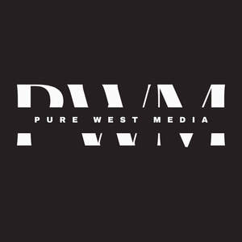

Trade Mark Journal No.2026/006 6 February 2026
UK00004328731 23 January 2026 (35)

- Class 35
- Public relations; Public relations agency; Public relations services; Public relations consultancy; Public relations studies; Consultancy relating to public relations; Advisory services relating to public relations; Consultancy regarding public relations communications strategy; Assistance to management in commercial enterprises in respect of public relations; Consultancy regarding public relations communication strategies; Advertising, promotional and public relations services; Conducting studies in the field of public relations; Media relations services; Advertising services to promote public awareness of environmental matters; Analysis of the public awareness of advertising; Advertising services to promote public awareness of social issues; Advertising services to promote public awareness in the field of social welfare; Public opinion polling services; Advertising services to promote public awareness of medical issues; Public opinion surveys; Advertising services to promote public awareness of medical conditions; Advertising services relating to public works; Public opinion polling; Public opinion polls (Operating of -); Advertising services to promote public awareness of environmental issues and initiatives; Advisory services (Business -) relating to the management of public sector businesses; Preparation of public opinion surveys; Conducting public opinion polls; Public opinion polls (Conducting of -); Design of public opinion surveys; Services with regard to product presentation to the public; Administration of foreign business affairs; Advertising services to promote public awareness of the benefits of shopping locally; Employment agency services for personnel in general office positions; Advertising through all public communication means; Administration of business affairs; Management assistance in business affairs; Administration of the business affairs of franchises; Help in the management of business affairs or commercial functions of an industrial or commercial enterprise; Business administration services in the field of transportation; Advertising services to promote public awareness of nephrotic syndrome and focal segmental glomerulosclerosis [FSGS]; Business assistance relating to corporate identity; Development of business organization strategies relating to corporate social responsibility; Assistance to management in commercial enterprises in respect of advertising; Corporate communications services; Presentation of goods on communications media, for retail purposes; Consultations relating to business advertising; Administration of the business affairs of retail stores; Advisory services relating to corporate identity; Administrative services relating to referrals for general building contractors; Providing business information in the field of social media; Political advertising services; Evaluations relating to business management in commercial enterprises; Publicity agency services; Advisory services relating to business administration; Management administration of commercial undertakings; Presentation of goods on communication media, for retail purposes; Communication media (Presentation of goods on -), for retail purposes; Retail purposes (Presentation of goods on communication media, for -); Evaluations relating to business management in professional enterprises; Administration of cultural and educational exchange programs.
Janet West